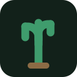
Kısa, hızlı, rekor kırmaya dayalı bir 3B platform oyunu
Kısaca: Çölün dikenleri arasında zıpla, sekiz kaktüs çiçeğini topla, dikenli düşmanların üstüne bin. Altı bölüm, tek oturuş. Bölümü bitirmek kolay; temiz bitirmek değil. Tarayıcıda, Windows'ta ve telefonda oynanıyor.
| Geliştirici | Cactus Cafe (Türkiye) |
| Yayıncı | Bağımsız (kendi yayını) |
| Çıkış tarihi | Duyurulacak |
| Platformlar | Tarayıcı (WebGL), Windows, Android |
| Fiyat | Duyurulacak · demo ücretsiz |
| Diller | Türkçe, İngilizce |
| Motor | Godot 4 |
| Oyuncu | Tek kişilik · yerel ağda iki kişilik deneysel kip |
| Süre | Yaklaşık 45 dakika · rekor kovalamak sınırsız |
| Site | cactuscafes.com |
| İletişim | batuhanbulut@cactuscafes.com |
Çöl seni beklemiyor. Cactus 3B, tek oturuşta bitirilen bir 3B platform oyunu. Dikenli tarlaların üstünden basamak taşlarına atlıyor, hareketli platformlara yetişiyor, kule tepesindeki çıkışa tırmanıyorsun. Yolda sekiz kaktüs çiçeği ve seni fark edince peşine düşen dikenli düşmanlar var.
Zıplama hissi önce gelir. Kenardan düştükten sonra hâlâ zıplayabilirsin (coyote süresi), havadayken bastığın zıplama yere değince hatırlanır, tuşu erken bırakırsan alçak zıplarsın. Fark edilmeyen, ama olmayınca hissedilen şeyler.
Düşmanlar adil. Seni 120 derecelik bir koni içinde ve engel yoksa görürler — arkadan yaklaşabilir, platformun arkasına saklanabilirsin. Saldırıdan önce hazırlanırlar; kaçmak için bir anın vardır.
Rekor senin rakibin. Her bölüm süreni ve ölümünü kaydeder.
On bir kare · 1920×1080 · PNG (kayıpsız). Haber, inceleme ve video içeriklerinde serbestçe kullanılabilir. Başka ölçü veya kadraj gerekirse yazın.
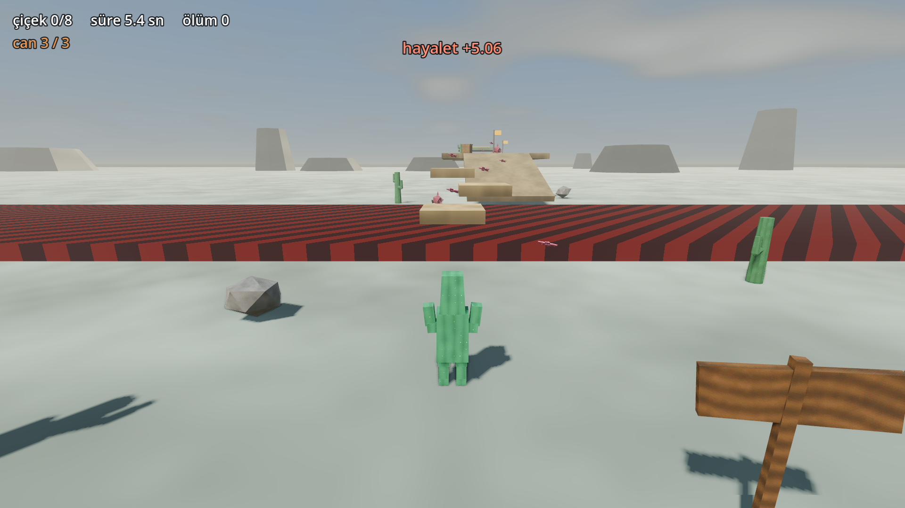
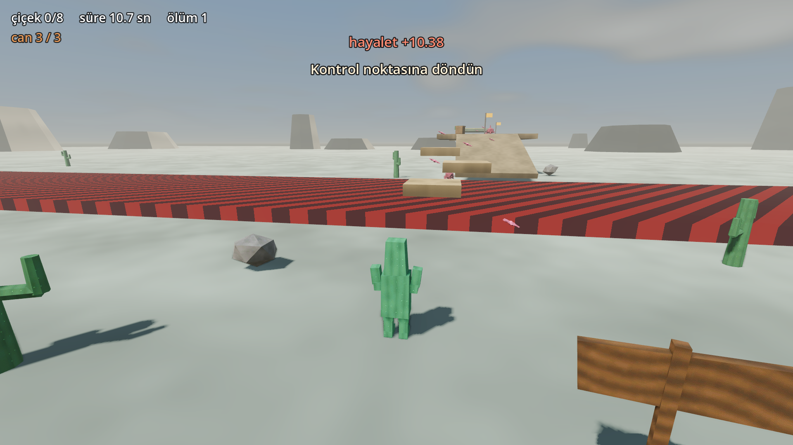
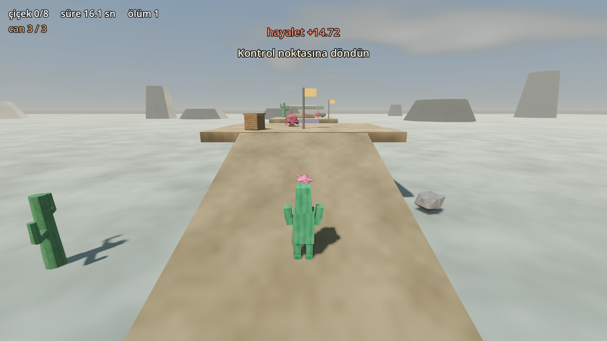
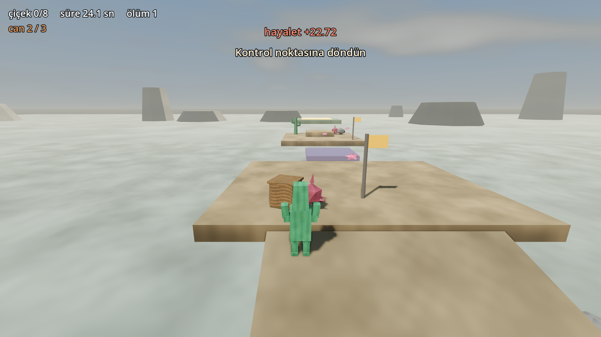
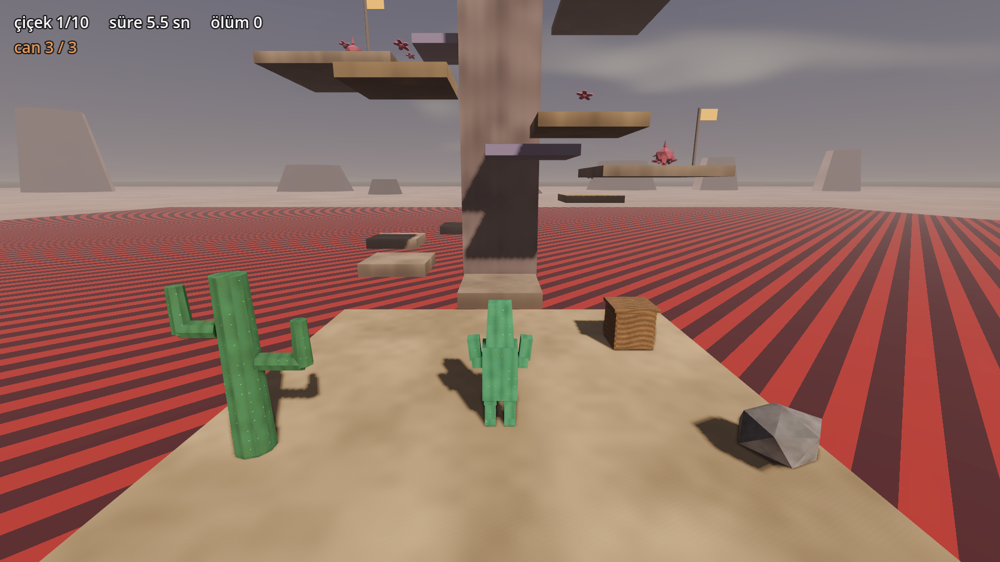
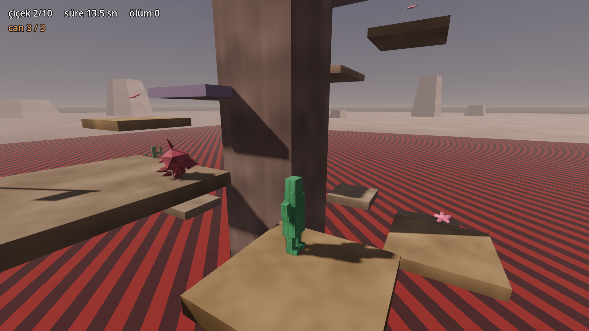
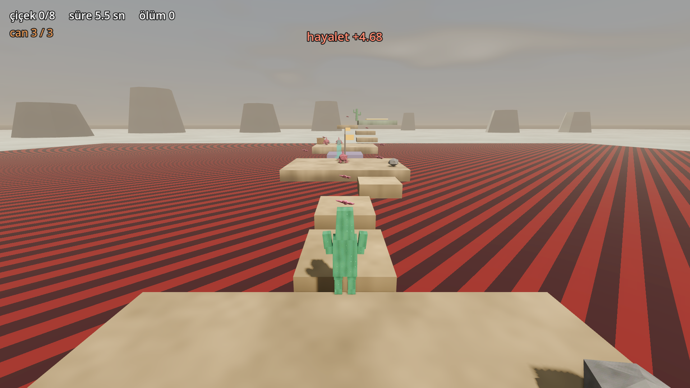
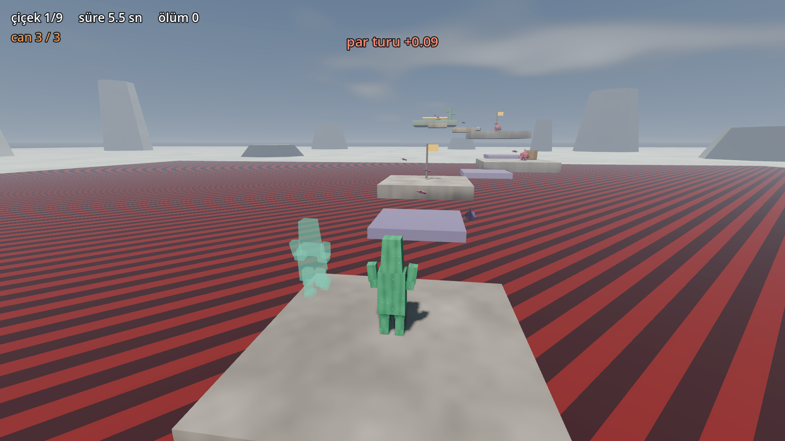
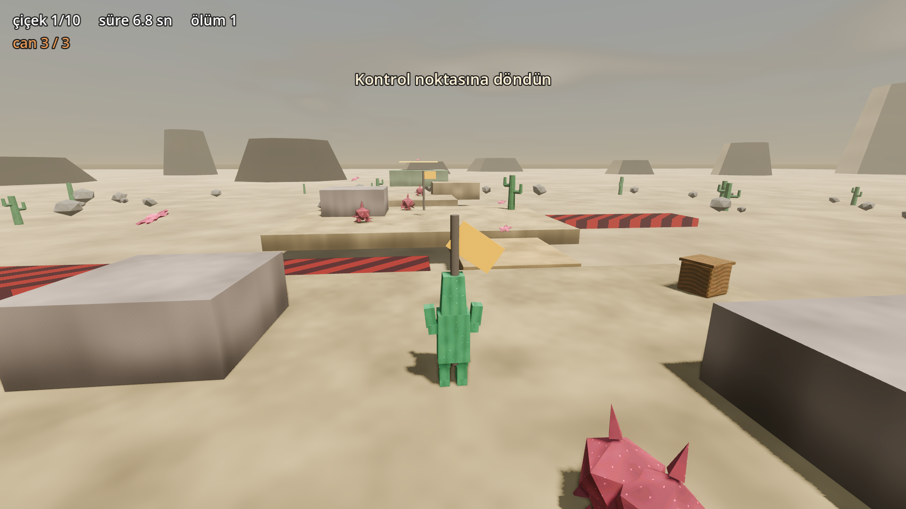
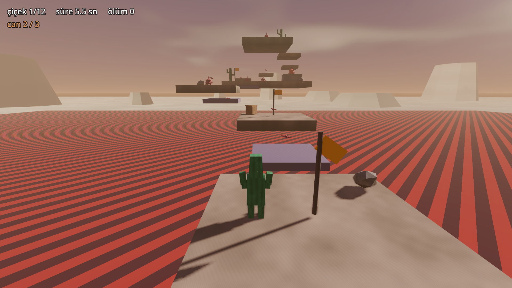
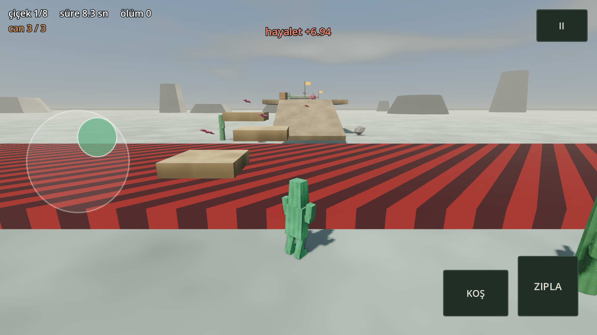
Tanıtım videosu: duyurulacak. Bu depodan kendiniz de üretebilirsiniz:
araclar/tanitim.gd, oyunu betikle oynatıp sabit kare hızında kaydediyor.
icon.svg — vektör, her ölçüde kullanılabilir.
Cactus 3B'nin ekran görüntülerini, videolarını ve logosunu haberlerde, incelemelerde, yayınlarda ve videolarda serbestçe kullanabilirsiniz — izin istemenize gerek yok. Para kazandığınız içerikler de dâhil (YouTube, Twitch, Kick). Telif hakkı talebi göndermiyoruz.
Henüz yok. Oyun çıkmadı; bu bölüm boş olduğu için burada duruyor, doldurmak için uydurma alıntı yazmıyoruz.
Oyun varsayılan olarak hiçbir veri göndermez. Ayarlardan açıkça
açarsanız hangi bölümde ne kadar oynadığınız ve nerede öldüğünüz anonim olarak
iletilir; oturum numarası her açılışta yenilenir ve diske yazılmaz, yani iki
oturum birbirine bağlanamaz. Ad, e-posta, IP, cihaz kimliği ve konum
toplanmıyor. Ayrıntısı: oyun3d/sunucu/README.md.
Oyun, sıfırdan açık bir yol haritası izlenerek yapıldı: araç kurulumundan
(Godot, Blender) başlayıp karakter kontrolüne, bölüm tasarımına, sese, arayüze,
performans bütçesine, mobil kontrollere ve ağa kadar. Her aşamanın kararları ve
tuzakları depodaki oyun3d/README.md ve
3D-OYUN-YOLHARITASI.md dosyalarında yazılı. Modeller, dokular,
animasyonlar, ses efektleri ve navigasyon ağı elle değil betikle
üretiliyor: oyun3d/araclar/ altındaki komutlar aynı varlıkları
her seferinde yeniden üretiyor.
In short: Hop across a thorny desert, collect eight cactus blooms, bounce off spiny foes. Six levels, one sitting. Finishing is easy; finishing clean is not. Plays in the browser, on Windows, and on phones.
| Developer | Cactus Cafe (Türkiye) |
| Publisher | Self-published |
| Release date | To be announced |
| Platforms | Browser (WebGL), Windows, Android |
| Price | TBA · demo free |
| Languages | Turkish, English |
| Engine | Godot 4 |
| Players | Single player · experimental two-player LAN mode |
| Length | About 45 minutes · chasing records, unlimited |
| Website | cactuscafes.com |
| Contact | batuhanbulut@cactuscafes.com |
The desert will not wait for you. Cactus 3D is a 3D platformer you finish in one sitting. You leap from stepping stone to stepping stone over thorn fields, catch moving platforms, and climb to the exit atop a tower. Along the way: eight cactus blooms and spiny foes that chase you once they spot you.
Jump feel comes first. You can still jump shortly after walking off a ledge (coyote time), a jump pressed mid-air is remembered on landing, and releasing early gives you a shorter hop. Things nobody notices — until they are missing.
The enemies play fair. They see you inside a 120-degree cone with clear line of sight, so you can approach from behind or break line of sight. They wind up before striking, which gives you a moment to escape.
Your rival is your own record. Every level stores your time and death count.
1920×1080 PNG, in the Turkish section
above or straight from gorseller/. Free to use in articles,
reviews and videos; write to us if you need a different crop or size.
You may use Cactus 3D's screenshots, video and logo freely in news, reviews, streams and videos — no permission needed, including monetized content. We do not issue copyright claims.
The game sends nothing by default. If you explicitly opt in, it reports anonymously which level you played, for how long, and where you died. The session id is regenerated on every launch and never written to disk, so two sessions cannot be linked. No name, e-mail, IP, device id or location is collected.
{kind=link}
{kind=link}
{kind=link}
{kind=link}
{kind=link}
{kind=link}
{kind=link}
{kind=link}
{kind=link}
{kind=link}
{kind=link}
{kind=link}